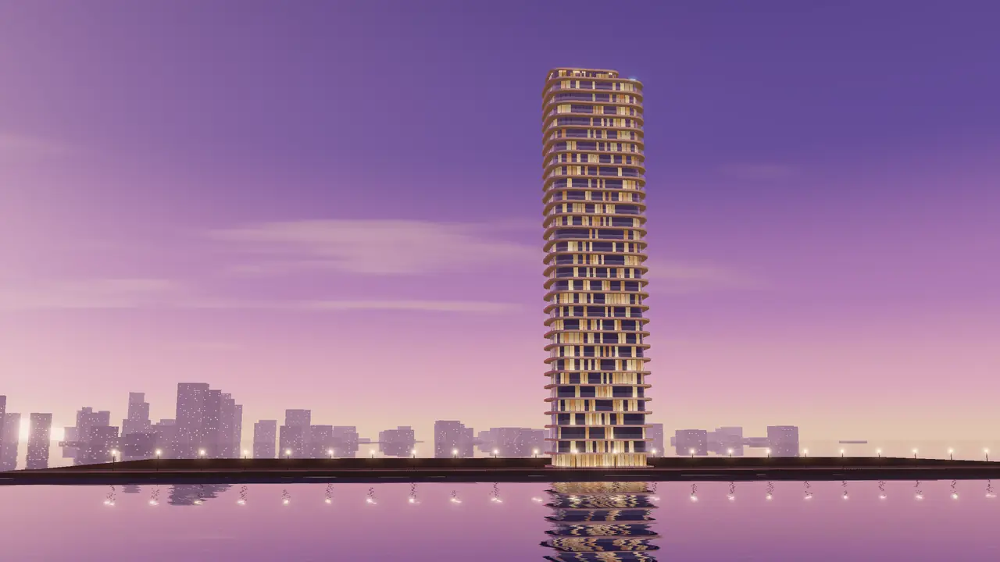
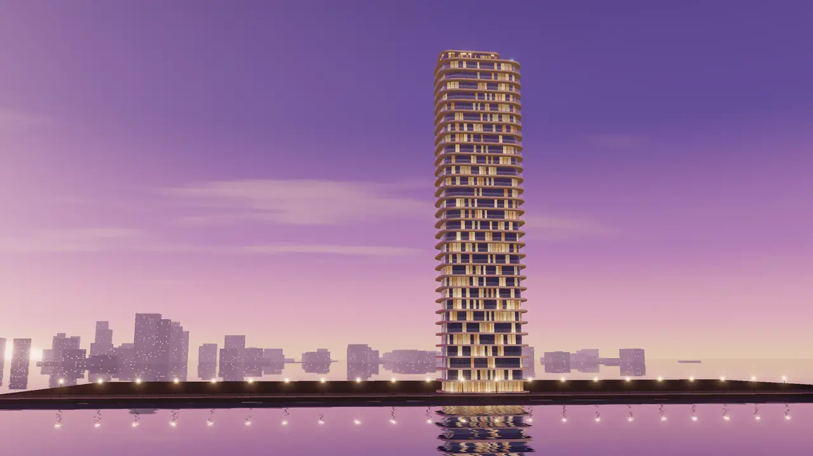
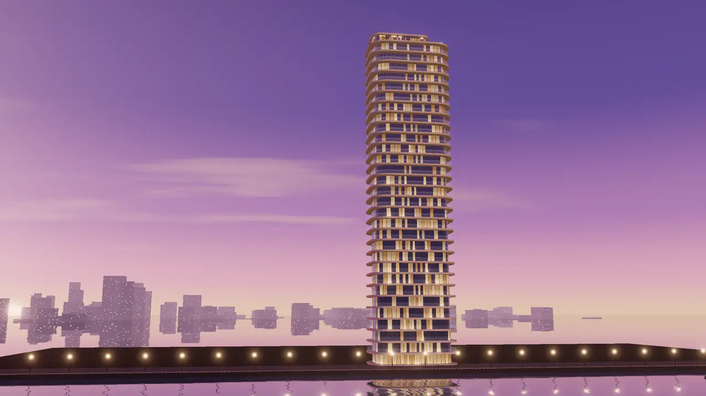
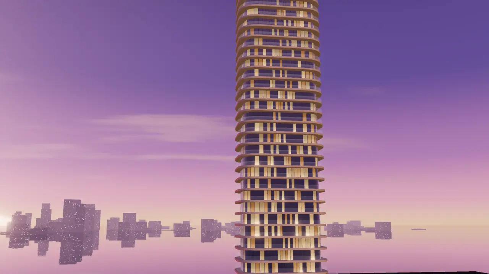
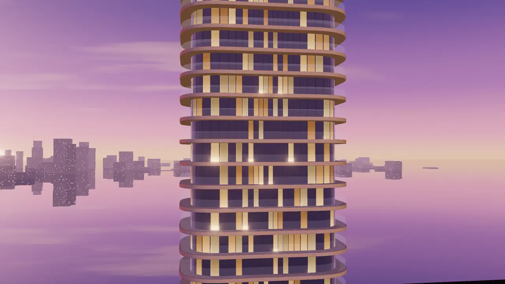
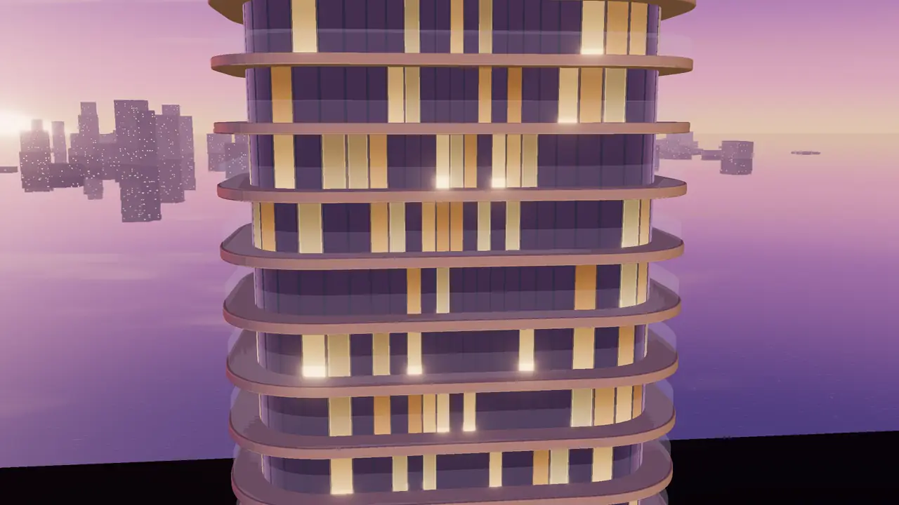
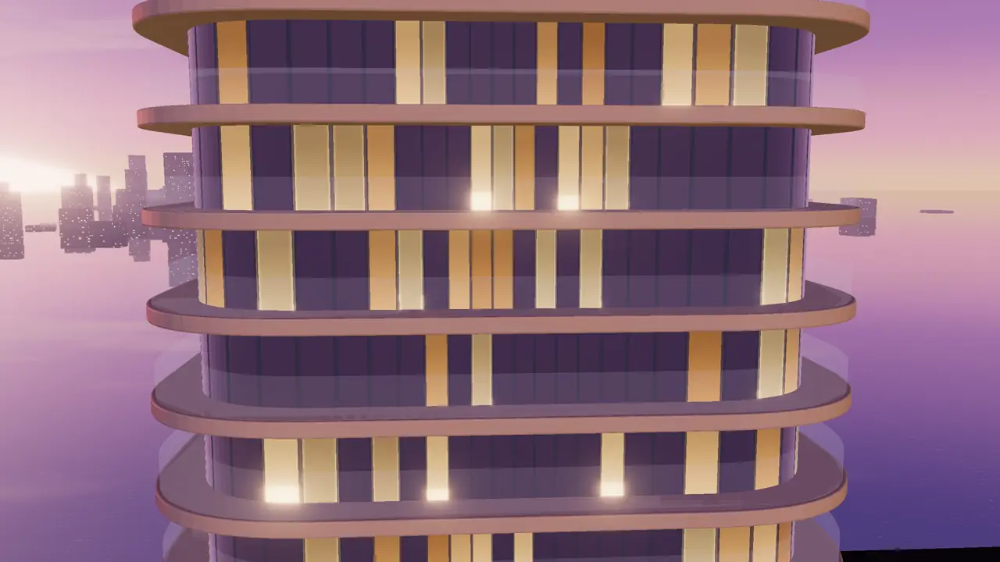
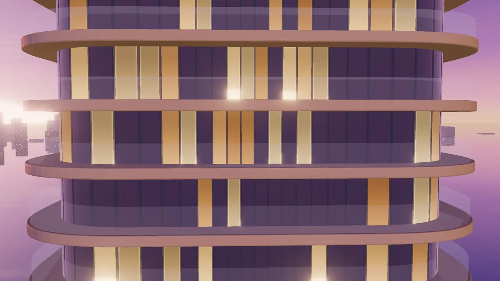
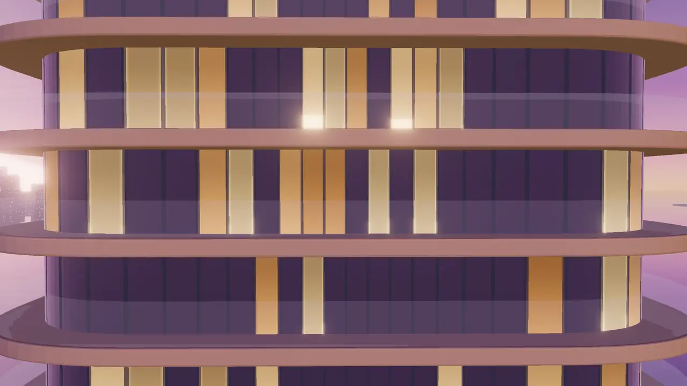

Cuando ves la torre al atardecer y la cámara vuela hasta una planta, lo que parece magia es una cadena de producción bastante prosaica: unas pocas imágenes muy bien dirigidas, varios clips de vídeo generados entre esas imágenes y un montón de fotogramas exportados con ffmpeg. El creador del vídeo usaba Higgsfield, una plataforma que agrupa varios modelos de imagen y vídeo; pero la herramienta cambia cada pocos meses y el método no.
Esta lección es ese método. Si lo sigues, puedes cambiar de generador sin rehacer el proyecto.
La herramienta cambia cada pocos meses. El método no.
- Brief de luzhora, lente, paleta
- Lista de planos16:9 y 9:16
- Promptsesqueleto fijo
- Clipsprimer y último fotograma
- Fotogramasffmpeg a WebP
- Pesoscrub, pósters, pasadas
- Derechoslicencias y avisos
Dirección de arte antes que prompts
El error típico es abrir el generador y escribir «torre de lujo al atardecer». Sale algo bonito, y el siguiente plano sale bonito también, pero con otro cielo, otra fachada y otra hora. Antes de generar nada, decide tres cosas por escrito: la hora exacta, la lente y la paleta.
El brief es un documento corto, una página, que vas a pegar en cada generación:
- Moodboard: 6–10 imágenes de referencia propias o con licencia, elegidas por luz y materiales, no por «me gusta». Anota qué tomas de cada una («este rosa en el horizonte», «estas lamas de piedra»).
- Paleta: los mismos tokens que usarás en CSS. Si la web es violeta noche, crema y luz cálida, el cielo y las ventanas tienen que caer en esos colores, o el texto encima chocará.
- Luz: hora relativa al ocaso, temperatura de las ventanas (2700 K es luz cálida de casa) y qué porcentaje está encendido.
- Lente y cámara: 35 mm a la altura de los ojos para el exterior; 24 mm para interiores; altura y distancia de la cámara.
Lo que hace que unas imágenes de IA parezcan de estudio de arquitectura y no de banco de imágenes es la contención: cielo sin saturar, sin HDR, sin reflejos imposibles, ventanas encendidas de forma irregular (como en un edificio habitado). Si tu primera imagen grita, todas las demás gritarán con ella.
En una pantalla de 6 pulgadas los degradados sutiles del cielo se pierden y las ventanas se convierten en puntitos. Pide la versión vertical con la torre más grande en el encuadre y un contraste de luz algo mayor entre ventanas y fachada: es lo que se lee a un brazo de distancia.
La lista de planos de una web de scroll
Una web cinematográfica se planifica como un anuncio: cada plano tiene una función, un formato y un sitio en el recorrido de scroll. Esta es la lista de la torre. Cambia el formato para ver qué pasa con cada encuadre en vertical.
| Plano | Función | Recurso final | Versión móvil |
|---|---|---|---|
| 00 Intro FPV | Gancho de 1 s mientras carga lo demás | MP4 corto, muted playsinline | Mismo clip recortado 9:16, o póster fijo con movimiento reducido |
| 01 Exterior | Situar: el edificio, el agua, la hora | AVIF/WebP grande, primer fotograma de la secuencia | Imagen 9:16 propia |
| 02 Vuelo | El momento espectacular | Secuencia de 90–150 WebP | Secuencia 9:16 aparte, menos resolución |
| 03 Planta | Explorar estancias | Imagen + botones encima | Planta girada o recortada, botones de 44 px |
| 04 Interiores | Emoción: «me veo viviendo aquí» | Clips de 4–6 s con póster, preload="none" | Versión 9:16, se carga solo al tocar |
Pocos planos, muy buenos. Cinco planos coherentes impresionan más que doce espectaculares que no casan. Y cada plano debe ser el último fotograma del anterior o empezar desde él: así el scroll se siente como una sola toma de cámara.
Planifica desde el principio cada plano en 16:9 y en 9:16. Un vertical no es un recorte de última hora: el exterior necesita aire arriba para el titular, y la planta isométrica suele tener que girarse para que las estancias quepan a lo alto.
Cinco planos coherentes. Una sola toma.
Cada plano termina donde empieza el siguiente y todos comparten la misma hora, la misma lente y la misma paleta. Así el scroll se siente como un único movimiento de cámara.Prompts repetibles y consistencia
La consistencia entre planos no se consigue con un prompt mágico, sino con un esqueleto fijo en el que solo cambia una parte. Escríbelo en lenguaje llano y por bloques. El orden te obliga a no olvidar nada y te deja comparar resultados.
Además del esqueleto, casi todos los generadores ofrecen alguna de estas palancas. Los nombres cambian de una herramienta a otra, pero las ideas son las mismas:
- Imagen de referencia: subes la imagen buena (el exterior aprobado) y generas el resto a partir de ella. Es la palanca más potente para mantener fachada, color y luz.
- Semilla (seed): si la herramienta la muestra, la misma semilla con el mismo prompt da composiciones parecidas. Sirve para iterar un detalle sin perder el resto.
- Referencia de estilo o de personaje: fija un aspecto visual o un elemento recurrente entre generaciones.
- Edición por zonas: en vez de regenerar todo, corriges solo una parte (un reflejo raro, una ventana fundida).
Guarda cada imagen aprobada con su prompt completo, la herramienta, el modelo y la semilla en un archivo de texto junto a ella (01-exterior-169.png + 01-exterior-169.txt). Dentro de dos semanas, cuando el cliente pida «lo mismo pero con la terraza más grande», te salvará la tarde.
El último paso de consistencia no es de IA: es de etalonaje. Pasa todas las imágenes finales por los mismos ajustes de color (la misma curva o la misma LUT en tu editor). Pequeñas diferencias de tono entre planos desaparecen y el conjunto se ve de una sola sesión de fotos.
Genera la versión vertical a partir de la imagen horizontal aprobada como referencia, no desde cero con el prompt. Si no, el 9:16 acaba siendo otra torre y quien abre la web en el portátil después de verla en el móvil lo nota.
De imagen a vídeo entre dos fotogramas
El vuelo hacia la planta 32 se genera con la técnica de primer y último fotograma: le das al generador de vídeo la imagen del exterior y la imagen cercana de la planta, y él inventa el movimiento entre las dos. Higgsfield, por ejemplo, lo llama «Start & End Frames». Lo difícil no es generar el clip, sino elegir uno sin deriva.
Reglas que ahorran muchas generaciones:
- Un solo movimiento por clip: avanzar, o girar, o subir. Los movimientos compuestos se deforman antes.
- Clips cortos (5–8 s) y encadenados: el último fotograma del clip A se exporta y se convierte en el primer fotograma del clip B.
- Revisa fotograma a fotograma antes de aprobar. Abre el clip en el editor de vídeo y arrastra el cabezal despacio: así es exactamente como lo verá el usuario con el scroll.
Tienes un clip de 6 s que en reproducción normal se ve perfecto. Lo conviertes en secuencia para un scrub largo. ¿Qué es lo más probable que veas?
- Nada nuevo: si se ve bien a 24 fps, se ve bien con scroll.
- Pequeños saltos y ventanas que cambian, porque el usuario se para en fotogramas intermedios.
- Que la imagen se vuelve borrosa, porque el scroll interpola los píxeles.
A 24 fps cada fotograma dura 40 ms y el ojo funde los errores. Con scrub, el usuario puede quedarse quieto en el fotograma 63: cada defecto de ese fotograma está a la vista todo el tiempo que quiera.
Genera el vuelo vertical como clip propio, con su primer y último fotograma en 9:16. En vertical, avanzar hacia una planta pide menos recorrido lateral y más subida: el «zoom» hacia la planta 32 se lee mejor si la cámara también asciende un poco.
Fotogramas con ffmpeg
Del clip aprobado sacas una secuencia de imágenes numeradas para el canvas. ffmpeg lo hace en una línea; lo importante es decidir cuántos fotogramas, a qué tamaño y con qué calidad.
- 0001.webp
- 0012.webp

0023.webp
0034.webp
0045.webp
0056.webp
0067.webp
0078.webp
0089.webp
0100.webp
0111.webp 0120.webp
0120.webp
fps=24remuestrea el clip: con 12 tienes la mitad de fotogramas y la mitad de peso.scale=1600:-2fija el ancho y calcula el alto par.flags=lanczosreduce con más nitidez.-qualityde WebP va de 0 a 100: entre 65 y 75 es donde un fondo fotográfico deja de mejorar a simple vista.%04dnumera con cuatro cifras. Así tu JS haceString(i).padStart(4, '0')y el orden alfabético coincide con el numérico.
¿Cuántos fotogramas hacen falta? Depende de cuánto scroll ocupa el plano. Lo que importa es cuántos píxeles de scroll le tocan a cada fotograma.
12 fps de extracción bastan casi siempre para un vuelo lento con scrub: el scroll ya suaviza. Gasta los fotogramas donde hay movimiento rápido y no en los segundos en que la cámara casi se para; puedes recortar el clip antes de exportar con -ss y -t.
Escritorio 16:9 y móvil 9:16: dos secuencias
Servir la secuencia horizontal en un móvil vertical con object-fit: cover recorta tres cuartas partes de la imagen y descarga píxeles que nadie ve. Lo profesional son dos secuencias. Si el presupuesto no da para generar el vertical, al menos recórtalo dirigiendo el encuadre: decide qué debe quedar dentro.
(iw-ow)*0.62 desplaza la ventana al 62 % del margen sobrante. Si la cámara se mueve durante el clip, comprueba el recorte en el primer, el medio y el último fotograma.Elige la secuencia en JS con la orientación real, no con el ancho: matchMedia('(orientation: portrait)') o (max-aspect-ratio: 3/4). Una tablet en vertical también quiere la 9:16, y un móvil en horizontal la 16:9. Decide una sola vez al cargar; cambiar de secuencia a mitad de scroll obliga a descargar otra vez.
Vídeo para scrub, pósters y peso
La alternativa a la secuencia es un solo vídeo cuyo currentTime mueves con el scroll. Pesa menos, pero un MP4 normal solo tiene un fotograma completo (keyframe) cada pocos segundos, y saltar a un punto intermedio obliga al navegador a reconstruir desde el último keyframe. Resultado: tirones. La solución es codificar con keyframes muy frecuentes.
-anquita el audio: un vídeo de scrub no lo necesita y algunos navegadores bloquean la reproducción automática de vídeos con sonido.-movflags +faststartmueve el índice del MP4 al principio del archivo. Sin él, el navegador tiene que descargar casi todo antes de poder mostrar el primer fotograma.-pix_fmt yuv420pasegura que se reproduce en todos los dispositivos.
Para la secuencia de imágenes, el truco que mejor funciona es la carga por pasadas: primero uno de cada ocho fotogramas (la animación ya se puede usar, a saltos), luego uno de cada cuatro, y al final el resto. Mientras falta un fotograma, el canvas pinta el más cercano que ya ha llegado.
Peso en disco no es memoria. 120 WebP de 45 KB son 5 MB de descarga, pero una vez decodificados en el canvas ocupan ancho × alto × 4 bytes cada uno. En la lección siguiente calculas cuánto aguanta un Android de gama media.
Muchos usuarios abren la web por datos móviles y con el modo de ahorro activado. Ten siempre un camino ligero: póster, titular y la planta con hotspots funcionan sin la secuencia. Si navigator.connection?.saveData es true (solo lo exponen los navegadores Chromium), sirve 12 fps o salta directamente a la planta.
El vídeo de scrub da tirones en el portátil cuando haces scroll hacia atrás. ¿Qué cambias primero?
- Subes el bitrate para que tenga más calidad.
- Lo conviertes a WebM porque MP4 no permite ir hacia atrás.
- Lo recodificas con keyframes muy frecuentes (
-g 1o un GOP corto) y+faststart.
Ir hacia atrás obliga a reconstruir desde el keyframe anterior. Con un keyframe en cada fotograma (o cada pocos), cada salto es inmediato. El bitrate no cambia eso, y MP4 permite buscar en ambas direcciones.
Licencias y derechos de uso
Que puedas generar una imagen no significa que puedas usarla para lo que quieras. Antes de entregar una web hecha con recursos de IA, revisa cuatro cosas:
- Las condiciones de la herramienta y del plan con el que generaste. Muchas ligan el uso comercial al plan de pago, y las condiciones cambian. Guarda una copia o captura de los términos vigentes cuando generaste.
- Lo que subes como referencia: si usas la foto de otro fotógrafo o el render de otro estudio como referencia, estás usando su obra. Usa material propio, del cliente o con licencia.
- Quién es el autor. En Estados Unidos, la Oficina de Copyright concluyó en enero de 2025 que el material generado solo con prompts no es protegible; sí puede serlo la aportación humana suficiente: selección, composición y modificaciones (resumen del informe). En la UE la lógica general es parecida: la protección exige creación humana. Consecuencia práctica: no prometas al cliente una «propiedad intelectual exclusiva» de las imágenes que quizá no exista.
- Transparencia. Desde el 2 de agosto de 2026 se aplican las obligaciones de transparencia del artículo 50 del Reglamento europeo de IA: quien publica contenido generado que pueda pasar por real (un deepfake) debe indicar que es artificial, con una obligación más ligera para obras claramente artísticas o de ficción (guía práctica del artículo 50). En una promoción inmobiliaria, además, las imágenes de un edificio sin construir ya suelen llevar «imágenes orientativas, no contractuales». Añade que están generadas con IA.
Pon una línea en el presupuesto y en el contrato: «Las imágenes y vídeos se generan con herramientas de IA bajo las condiciones comerciales de [herramienta, plan]. Representan el proyecto de forma orientativa». Te protege a ti, protege al cliente y evita que alguien compre un piso por un reflejo que no existe.
El aviso «Imágenes generadas con IA, orientativas» tiene que verse también en la versión vertical. No lo escondas en un pie de página que en el móvil está a quince pantallas: un texto pequeño fijo en la esquina del plano exterior, con contraste suficiente, cumple sin estorbar.
Un cliente te pasa el render de una torre de otro estudio y te pide «algo como esto» generado con IA para su promoción. ¿Qué es lo más sensato?
- Usarlo solo como inspiración verbal en el brief y generar desde imágenes propias o del cliente.
- Subirlo como imagen de referencia: lo que sale es nuevo, así que no hay problema.
- Generar con él y luego poner «imágenes orientativas».
Subir la obra de otro como referencia es usarla. El brief puede describir lo que te gusta (materiales, luz, encuadre) sin copiar su imagen. Y el aviso de «orientativas» resuelve la transparencia, no los derechos.
Resumen
- Primero el brief (hora, lente, paleta) y la lista de planos en 16:9 y 9:16; después los prompts, con un esqueleto fijo y la imagen aprobada como referencia.
- El vuelo es un clip entre primer y último fotograma sin deriva, que se convierte con
ffmpegen una secuencia de 6–30 px de scroll por fotograma, o en un vídeo con keyframes frecuentes y+faststart. - Mide el peso hasta «lista para usar» en 4G, carga por pasadas, deja los interiores para cuando se toquen y revisa licencias y avisos de IA antes de publicar.
Reto
Escribe el brief de luz y la lista de cinco planos para una bodega de la Plana (una masía entre viñas al atardecer, el vuelo entra a la sala de barricas). Genera con la herramienta que tengas solo el plano exterior en 16:9 y en 9:16, con el mismo esqueleto de prompt. Después extrae 12 fps de cualquier clip de prueba con el comando de ffmpeg de esta lección, a 1600 px y a 720 px, y anota cuánto pesa cada secuencia. Mete esos números en la calculadora de presupuesto.